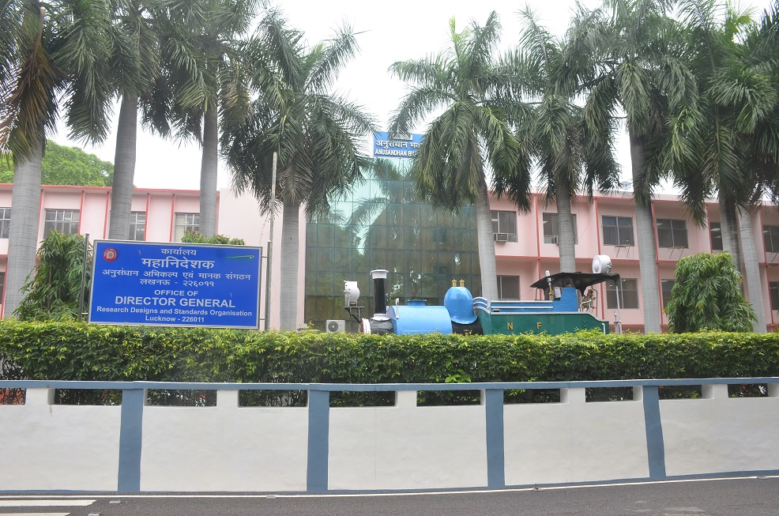

About Us
Introduction
Railways were introduced in India in 1853 and as their development progressed through to the twentieth century, several company managed and systems grew up. To enforce standardization and co-ordination amongst various railway systems, the Indian Railway Conference Association (IRCA) was set up in 1903, followed by the Central Standards Office (CSO) was set up at Shimla in 1930, for preparation of designs, standards and specifications. However, till independence, most of the designs and manufacture of railway equipments was entrusted to foreign consultants. With Independence and the resultant phenomenal increase in country’s industrial and economic activity, which increased the demand of rail transportation - a new organisation called Railway Testing and Research Centre (RTRC) was setup in 1952 at Lucknow, for testing and conducting applied research for development of railway rolling stock, permanent way etc.
Central Standards Office (CSO) and the Railway Testing and Research Centre (RTRC) were integrated into a single unit named Research Designs and Standards Organisation (RDSO) in 1957, under Ministry of Railways at Lucknow.
The status of RDSO has been changed from an ’Attached Office’ to ’Zonal Railway’ since 01.01.2003.
Organisation
RDSO is headed by a Director General, assisted by Special Director General (Engineering), Special Director General (Vendor Development), Additional Director General, Principal Executive Directors and Executive Directors, heading different directorates. RDSO has 32 Directorates for smooth functioning.
All the directorates of RDSO, except Quality Assurance field Units, are located at Lucknow. The Cells for Railway Production Units and Industries, which look after liaison, inspection and development work, are located at Bangalore, Bhopal, Mumbai, Kolkata, Jaipur, Hyderabad and New Delhi.